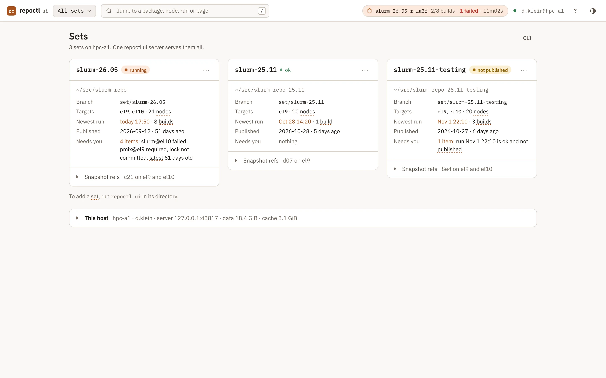
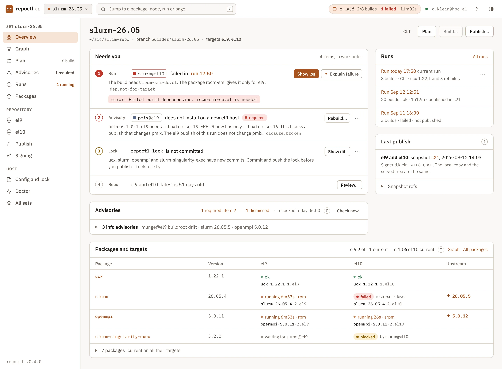
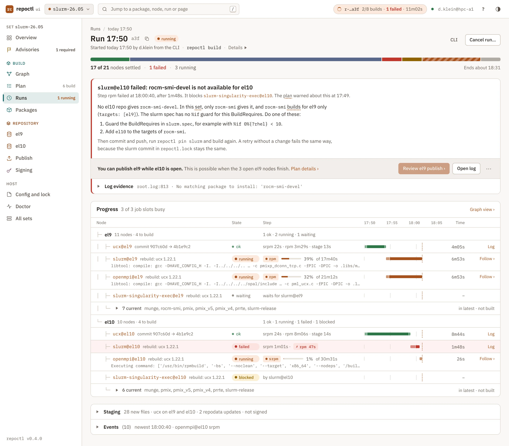
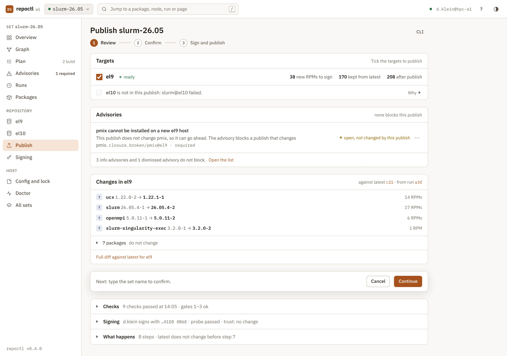

The web UI shows the state of your sets in a browser and starts the same actions as the CLI. It runs on your host, for you only. Use it to see what needs you, to read logs and to review a publish.
repoctl ui. It opens your browser. Run repoctl ui --stop to stop the server.$ repoctl ui $ repoctl ui --no-browser # print the URL, open nothing $ repoctl ui --stop
Run repoctl ui in a set directory. The UI remembers the sets that you opened, and lists them on the first page. repoctl ui --remove SET removes a set from this list. If the session ends, the page tells you to run repoctl ui again.

| Page | Use it to | CLI |
|---|---|---|
| Sets | Pick a set. See the host state. | repoctl ui |
| Doctor | See the checks of the host and fix hints. | repoctl doctor |
| Overview | See what needs you, in work order, then the runs and the last publish. | repoctl status |
| Graph | See the dependency graph of each target and the state of each node. | repoctl graph |
| Plan | See what a build does and why. Start a build. | repoctl plan, repoctl build |
| Advisories | Read, dismiss and accept advisories. | repoctl advisories |
| Upstream | Compare versions with upstream releases. | repoctl upstream |
| Runs, run, node | Follow a running build. Read the log of a node. | repoctl runs, repoctl logs |
| Packages, package | See the state of each package and its commits. | repoctl list, repoctl show |
| Repository, diff | See latest and the staging of a target. Compare snapshots. | repoctl repo |
| Publish | Review the summary and the checks. Confirm the publish. | repoctl publish |
| Signing | See the keys and their deployment record. | repoctl sign ls |
| Config | See the effective settings and where each value comes from. | repoctl config show |
The Overview tells you what needs action now, and in which order. Each item has one sentence, one button and a code. When nothing needs you, the page says so in one line.

The UI follows a few rules. It shows exceptions first. It shows one main action. It uses red only for a blocker.

Press Publish… on the Overview or open Publish. The page shows the same summary as repoctl publish --dry-run: the nodes, the new RPMs, the signing gates and the advisories. A blocker is red and names its fix. To confirm, type the set name in the dialog.

Some pages show an agent button. The buttons work when agent.command is set in the user config and the command is on your PATH. Each button runs one fixed skill. The agent can read the state through a read-only MCP server. It cannot change anything.
| Button | Skill |
|---|---|
| Explain failure | triage-build |
| Is a rebuild necessary? | rebuild-check |
| Summarize upstream release | package-updates |
| Draft a version bump | bump-package |
Without an agent command, the buttons are off, and the rest of the UI works. To use the same skills in your own agent session, run repoctl skills install and repoctl mcp start. Read Agents for the design.
The design of each page, the states and the mockups are in Web UI (design) and the mockup gallery.